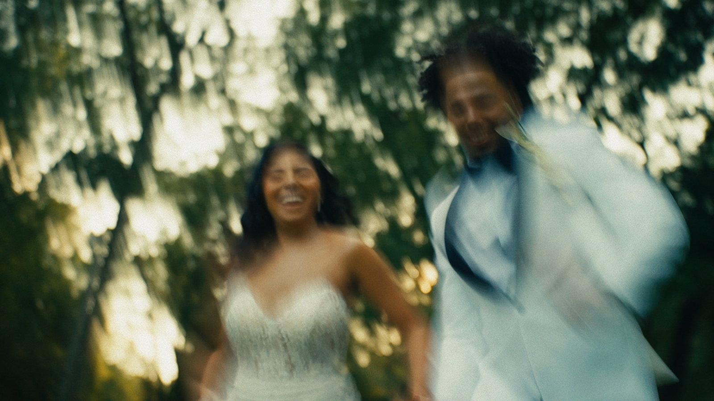
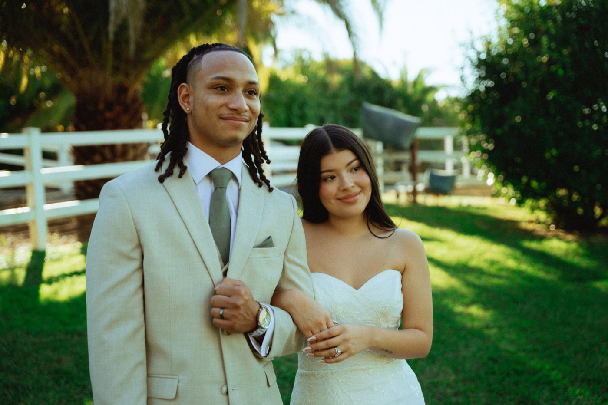
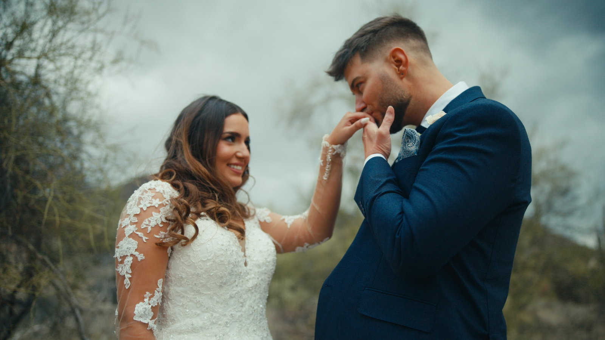

Union Films / The Work
Below are three weddings we filmed, the finished work, and the exact price each couple paid. Most videographers make you ask. We would rather you see the films and the numbers side by side, so when we talk it is about your day, not our rate card.
How to watch these / 00
Anyone can make thirty seconds of a wedding look good. Watch longer than that. Listen to whether the vows come through clean. Notice whether the speeches make you feel something even though you have never met these people. And watch the couple. If they never look aware of the camera, that is not luck. That is the job done right.
KJ & Lesley / 01

Watch their filmDeMarco & Maricela / 02

Watch their filmChristian & Matia / 03

Watch their filmWhat moves the number / 04
Every wedding we quote lands somewhere in the range above. Where yours lands comes down to three things: how many hours we are with you, how much of the day we cover, and what you take home when it is done. A highlight film, the full ceremony, every speech, short cuts for Instagram, the raw footage. Each of those is a decision we make together, and your number gets built from those decisions on the call.
If these numbers are outside what you had planned, say so on the call anyway. Sometimes there is a version that fits. If there is not, you will hear it from us straight, and nobody wastes an afternoon.
Before your day / 05
Most of a great wedding film is decided before anyone presses record. Whoever you end up hiring, these six decisions will make your film better.
Leave room in the timeline.
Rushed couples look rushed on camera. Thirty unscheduled minutes between the ceremony and the reception is where the best candid footage of the whole day tends to happen.
Protect twenty minutes at sunset.
It is the best light of the entire day. Couples who hold that window get the shots that end up printed on the wall.
Ask guests to put phones away for the ceremony.
One guest leaning into the aisle with a phone can sit in the middle of a moment you only get once. Your officiant can handle it in one sentence, and nobody minds.
Put the important words on paper.
Vows, letters, your dad's speech. Spoken words carry a wedding film, and when we know they are coming we mic them properly instead of hoping the room stays quiet.
Tell us who matters.
The grandmother at table two, the friend who flew in from overseas. We film the people you point us to. That is the difference between footage of guests and footage of your people.
Do not perform.
The moments couples cry at when they watch their film back are almost never the staged ones. Our job is to be close enough to catch the real ones and quiet enough not to change them.
The next step / 06
You have seen the work and you have seen the numbers. The next call is where it gets specific: your date, your venue, what you want to walk away with, and the exact quote for your day.
Or just reply wherever this page was sent to you. Either way reaches us.